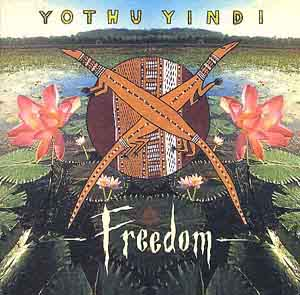

先住民族の単純な楽器とコーラスの音楽を求めて、先住民族学校に訪れて音楽を紹介 してもらいました。言葉が上手く通じなかったのか、私のイメージとは全く違い吃驚 してしまいました。特に最初の曲で拒否反応を示し聞くのを止めてしまいました。 ポートヘドランドに住み始めて１年以上経った頃ふとこの曲を再度聴いたら、今度は 虜になってしまた不思議な曲です。アボリジニの悲痛な叫びと諦めとしたたかな力強 い生活力を感じる曲です。 オーストラリアでは有名な音楽家達でシドニーオリンピックの開催式に出ていました。 国内での入手はＨＭＶで可能と思われます。